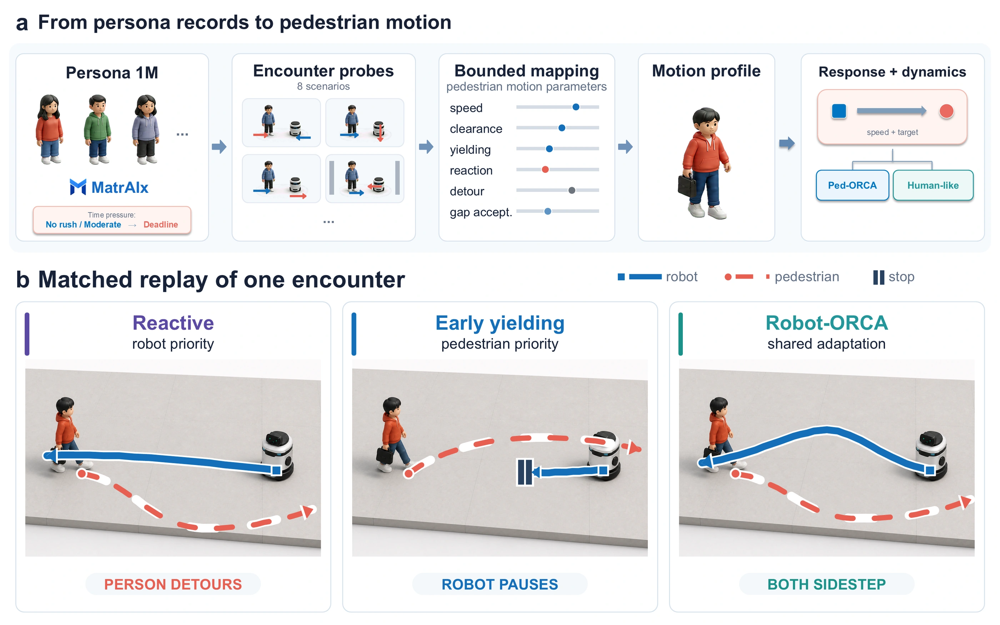
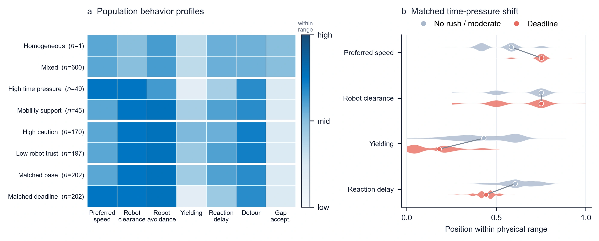

PopNavShift
Stress-Testing Social Navigation
under Behavioral Population Shift
Framework and matched simulation replay
Download videoRead the video transcript
Would the same robot controller still perform best if the pedestrians around it behaved differently? This is Pop Nav Shift.
We start with six hundred synthetic persona records. Standardized robot encounter probes elicit structured responses. A deterministic mapping converts them into seven bounded motion controls, including speed, clearance, and yielding. Eight population conditions change which profiles are represented.
Identical physical encounters are replayed under reactive geometric, early yielding, and Robot Orca controllers. A matched run without a robot measures added pedestrian delay.
The controlled intervention changes only time pressure in the same two hundred and two persona records. We repeat the probes and mapping, then replay the same encounters. Watch how changed pedestrian responses interact with each controller.
Changing time pressure reverses twenty two point four percent of mean pedestrian delay orderings, and twenty three point nine percent of worst decile delay orderings. Robot travel time orderings reverse in eight point six percent. Across all population pairs, pedestrian burden rankings also change more often than robot travel time rankings.
Population sensitivity is greater in narrow sidewalks and bottlenecks, where limited space amplifies behavioral differences. Mean delay can also hide concentrated burden in the worst decile.
Alternative mappings, pedestrian dynamics, and language models preserve the qualitative pattern. They still change the magnitudes of ranking reversals and the ordering of particular controllers.
These are controlled synthetic populations. Changing their time pressure does not estimate the causal effect of deadlines on real pedestrians.
Do controller comparisons change when the pedestrian population changes?
People differ in how closely they pass a robot, when they yield, and how quickly they move. Evaluation under one behavioral distribution can hide how these differences affect comparisons between navigation strategies.
PopNavShift replays the same physical encounters with different pedestrian populations. Geometry, initial conditions, and robot controllers stay fixed, allowing us to examine changes in robot performance alongside the burden placed on pedestrians.
From persona records
to matched encounters.
Standardized robot encounter probes turn synthetic persona records into structured responses. A deterministic mapping converts those responses into bounded pedestrian motion profiles.

Change the population
Eight conditions represent different distributions of pedestrian behavior. The matched intervention changes only time pressure for the same persona records.
Keep the comparison matched
Three controllers face identical physical episodes. Pedestrian added delay is measured against a matched baseline without a robot.
Explore the pedestrian motion profiles

Pedestrian burden rankings
change more often.
Changing time pressure for the same personas reverses controller orderings more often for pedestrian delay than for robot travel time.
- Mean pedestrian delay
- 22.4%
- Worst-decile delay
- 23.9%
- Robot travel time
- 8.6%
Rates are measured over comparable, non-tied controller orderings. Worst-decile delay captures the most delayed tenth of pedestrians.
The higher sensitivity of pedestrian burden also appears across population pairs. Population effects are larger in narrow sidewalks and bottlenecks, where some of the stronger effect coincides with controller failures.
Alternative mappings, a second pedestrian dynamics model, and a second language model preserve the qualitative pattern. Reversal magnitudes and some controller orderings change across these specifications.
Read the study.
Explore the evaluation.
The complete implementation and exact response-to-motion formulas will be released upon publication.
Cite this work
@misc{popnavshift2026,
title = {PopNavShift: Stress-Testing Social Navigation
under Behavioral Population Shift},
year = {2026},
url = {https://tantansir.github.io/PopNavShift/}
}